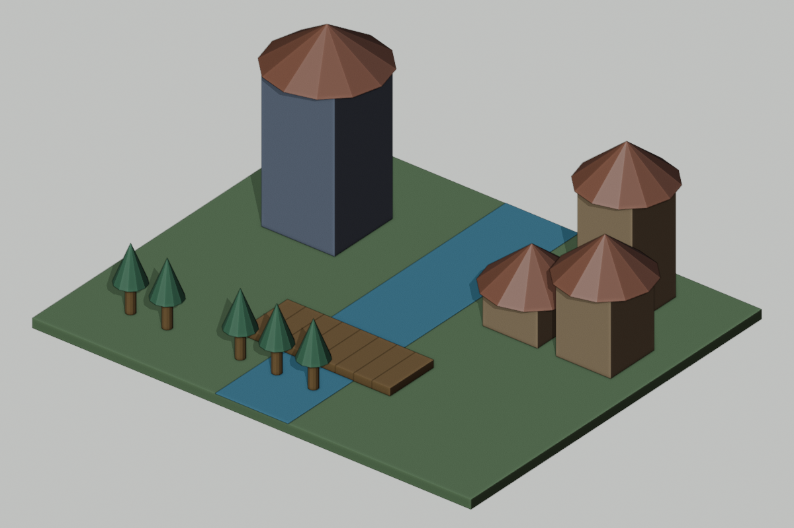

Your assignment today
- First: learn the explanation and watch today’s two demonstrations with your teacher.
- Then: try the two guided questions before looking at their solutions.
- Finish: work sections 1: Trace every candidate; 2: Repair the extra iteration; 3: Change and test the decision.
- Write here: your printed sheet,notebook,or usual school document. Label it Day 6 and your design ID. This website does not save written responses.
- Turn in: the required sections,one prediction/evidence/revision statement,and the six-question check in the format your teacher assigns.
- Finished early: select a continued-practice section or ChoiceA. You do not need to finish every optional task.
Start here • today’s change • finish here
Today: Add five trees from six candidate positions.


These are actual Blender renders of prepared reference scenes. Your class may choose different colors/details or defer a build. Compare measurements,not just appearance. On Days2,9,and10,the visible geometry may stay the same while planning,testing,or archiving advances.
TODAY’S FINISHED PRODUCT
A grove with a deliberately empty path position
What you actually do
1. Read the short reading. 2. Complete the must-do sections listed below in your own paper journal or school document;the remaining sections are continued practice. 3. Compare with a partner when told. 4. Keep working while the teacher operates Blender. 5. Record what passed or needs fixing. 6. Submit your work and check.
You do not open Blender or an AI account. The teacher submits one class request. If your design is not selected,you still submit your own thinking.
Learn this before doing today’s work
How to use this section: read the six explanations,follow the worked examples,then try the two guided questions. Your teacher will discuss them before assigning independent work. Return to the numbered explanation if you need help with a check question.
1. range excludes its stopping number
In Python,range(4) supplies0,1,2,3. The stop4 is not included. The for line supplies each value to i in turn,and the indented body runs once for each. The number of supplied values is the iteration count. Indentation shows which instructions belong inside the loop and inside a decision.
2. Calculate the position on each iteration
For each i,calculate x=start+spacing*i. Multiplication happens before addition. With start=-8 and spacing2,i2 gives x=-8+4=-4. Do this again for every row;do not keep the old x unless the code tells you to. In our main grove,start=-9 and spacing2.
3. Candidate positions differ from planted trees
A candidate is a location considered by the loop. A decision may skip the planting action,so six candidates can produce only five trees. Each tree in this project has a trunk and canopy,so five trees mean ten Blender objects. Keep iteration count,tree count,and object count in separate columns or statements.
4. A conditional selects an action
A conditional evaluates a true/false test. In Python,!= means not equal,== means equal,and> means greater than. if x!=-5 means plant only when x is not-5. if x>-5 would reject all values at or below-5,not only the path position. A decision can run inside a loop and be evaluated at every iteration.
5. Trace the row even when an action is skipped
A trace records i,x,the test result,and the action. When x equals the skip value,the row still exists:the computer calculated a value and evaluated a condition. Record false and skip rather than deleting the row. This lets someone verify the logic and distinguish a deliberate gap from a missing calculation.
6. Off-by-one and combined decisions
An off-by-one error repeats one time too many or too few. range(7) includes i6 while range(6) does not. A combined condition using AND requires both component conditions to be true. To understand a two-condition planting rule,make a separate truth column for each condition before deciding the final action.
Watch how it is done
Choose Play for a captioned demonstration,or use Next step to move at your own pace. Each example takes about20 seconds to reach its last step;pause as long as you need. Use the class task’s own numbers when you begin your work.
Watch the loop make a decision at every position
Animated teaching diagram · silent captions · 1 world unit = 1 meter. These are worked examples, not a recording of Blender.
See the extra candidate in an off-by-one error
Animated teaching diagram · silent captions · 1 world unit = 1 meter. These are worked examples, not a recording of Blender.
Read the original written steps
Follow a small loop
Code rule:for i in range(3),x=2*i;plant if x!=2. Row0:i0,x0,true,plant. Row1:i1,x2,false,skip. Row2:i2,x4,true,plant. Result:3 candidates,2 trees,4 objects if each has trunk+canopy. The skipped row remains visible.
Notice the extra repetition
A count4 loop with x=-8+2*i considers-8,-6,-4,-2. Changing range(4) to range(5) adds i4,x0. That is one extra candidate. Whether it becomes a tree still depends on the conditional;an extra iteration is not automatically an extra planted tree.
Try together before working independently
Write or say your answer first. Then open the explanation and compare your method,not only your final value.
Guided practice 1
Trace range(3),x=-6+2*i,plant if x!=-4.
Compare your answer and reasoning
Rows:i0 x-6 true plant;i1 x-4 false skip;i2 x-2 true plant. Three candidates,two trees.
Guided practice 2
If the same candidates use x>-4,which trees remain?
Compare your answer and reasoning
Only x-2 remains. x-6 and-4 fail the greater-than test. This differs from skipping only-4.
Help for the worksheet and extra choices
Changing skip:keep the candidate list the same first,then reevaluate each row. For an AND rule,write conditionA,conditionB,and finalA AND B columns;false in either means no planting. In a parameterized grove,count0 creates no candidates;an absent skip creates no skipped row;count1 can create zero or one tree depending on whether its sole candidate equals skip.
Connect the idea to our class world
A loop repeats instructions. A conditional chooses which instructions run. They often work together. To plant a grove, we can loop through possible positions and skip any position reserved for a path. In our code card, i takes the values 0,1,2,3,4,5. We calculate x=-9+2*i and use y=-7. When x=-5 we skip planting, leaving a path gap. Five trees remain at x=-9,-7,-3,-1,1.
The condition must be evaluated for each iteration, not once at the end. In Python, range(6) stops before 6. Therefore changing it to range(7) adds another iteration with i=6 and x=3. If the contract allowed only six candidate positions, that is an error even if the picture still looks attractive.
A trace table records i, x, whether the condition is true, and the action. Trace tables expose values that a small screenshot can hide. To test a repaired program, use both a normal case and a boundary case. A repair can fix one input while breaking another. Our tree drawing is deliberately simple: a cylinder trunk and a cone canopy. Planting the grove is a reason to study repetition and choice, not a contest to make the most detailed leaves.
Today’s assignment size
Must do: numbered work sections 1, 2, 3,the evidence/revision sentence,and the six-question check. Other numbered sections are continued practice if time allows,unless your teacher assigns one as your grade-specific task. Finish required thinking before starting an optional card. Grade7 on Day8 completes the unlabeled-pattern task in section2.
All students receive the teaching above;optional work is not a prerequisite for answering the check. If the class needs longer instruction,complete fewer practice cases or use the next class’s retrieval time for the remaining evidence. Do not skip the explanation to fit every extension.
Code card you will read or change
# Python: plant_tree is a modeling operation, not a built-in function.
for i in range(6):
x = -9 + 2 * i
if x != -5:
plant_tree(name="G" + str(i), x=x, y=-7)
# Faulty version to diagnose: same body, but range(7).Your four work sections
Design ID:________________ Grade:____ Date:__________
1. Trace every candidate
For i0, 1, 2, 3, 4, 5 calculate x=-9+2*i. Add columns x!= -5 (true/false) and action(plant/skip). Do not omit the skipped row.
Finished when you have: Six-row trace with decisions and actions.
| i | x | Condition true/false | Action |
|---|---|---|---|
2. Repair the extra iteration
A faulty version says range(7). Add its extra row to your table. Explain why that violates the six-candidate contract. Rewrite the full corrected loop, including the if line and plant_tree call.
Finished when you have: Extra-row diagnosis and corrected code.
3. Change and test the decision
Change skip from-5 to-3. List every remaining tree position. Then test count 4, start-8, spacing 2, skip-3. Trace those four candidates. Compare the resulting counts and explain why the same condition can skip nothing in one case.
Finished when you have: Two changed-case tests and a comparison.
4. Audit with a partner
Partner points to each trace row as you read the code. Count candidate iterations, trees, and tree objects assuming trunk+canopy. Write all three counts and one corrected misunderstanding.
Finished when you have: Three labeled counts and a revision.
When the teacher says “independent work”
Choose the right condition
For the original six positions, list what gets planted under A:x!=-5;B:x>-5;C:x==-5. Give three position lists and counts. Circle the condition that leaves ONLY the intended gap. Explain one failure in each other condition.
After the class checks the result
Complete: “I predicted____. Our evidence source was____(actual scene/report/paper trace/simulated). It showed____. I changed or confirmed____because____. We still do not know____.”
Grade target
- Grade 6: Use preprinted row labels and mark each decision;complete the corrected loop frame.
- Grade 7: Write the full loop independently and explain both changed tests.
- Grade 8: Define grove(count, start, spacing, skip);predict count 0, count 1, and a skip at the final candidate.
What to turn in
Submit work sections 1: Trace every candidate; 2: Repair the extra iteration; 3: Change and test the decision. Add your prediction/evidence/revision statement and the six-question check. Other numbered sections and choice cards are continued practice unless your teacher substitutes one for a grade-specific task.
Finished early? Choose one.
These are extra choices after your required work;your teacher can assign one in place of waiting work. Read the finished-product requirement before you start.
Grove expansion
Design a second row at y=-9 with five candidate positions that stay within terrain. Choose a skip rule leaving a 2-unit opening. Write code or precise pseudocode, trace every candidate, and check canopy bounds using radius0.8. Compare with your original row and explain one route concern.
Turn in: New algorithm, trace, canopy bounds, route comparison.
Decision test suite
A proposed program plants only when x is not the path value AND x is outside the river corridor (-2,2). Trace candidates -9,-7,-5,-3,-1,1. Separate the path decision from the river decision in two columns. State which trees are removed for each reason; rewrite the condition so another designer can read it.
Turn in: Six-row two-condition table, corrected program, explanation.
General rule
Write a parameterized grove(count,start,spacing,skip_x). Design tests for count0, count1, a skip not present, and a skip at the last candidate. Predict exact tree counts and explain why those boundaries matter.
Turn in: Your supported explanation,trace,or revised plan.
If technology fails
Use six numbered paper candidate cards. Move a token through every loop iteration and turn over the skipped card. Each student keeps a full trace and writes their own revised code; no live execution is necessary for the lesson to continue.
Shared-world reference strip
Ground24×20,top z=0. x=east/west,y=north/south,z=up. Tower body4×4×8,center(-7,4,4);roof radius3,depth2,center(-7,4,9). River x=-2 to2. Bridge8 planks,centers x=-3.5+i for i0–7,y=-4,z=.2;each1×3×.4. Homes H1(5,3,h2),H2(9,3,h4),H3(7,7,h6):body3×3×h,center z=h/2;roof depth2,center z=h+1. Grove:6 candidates,x=-9+2*i,y=-7,skipx=-5. Gate:posts x4 and8,width1,height4;lintel center(6,0,4.5),size5×1×1;gap3,clearance4. Required route width≥2. These are requirements until measured.